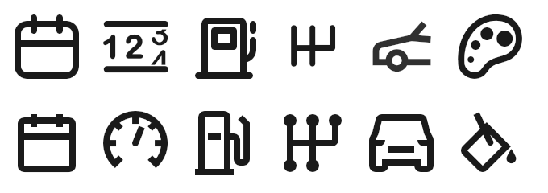

벤츠 CLE 200 카브리올레 · 차량 정보 아이콘 비교
씨엔모터스 장금용 딜러 매물 사진으로 만든 벨기에식 쇼츠(약 75초). 차량 정보 카드의 아이콘만 다르고 나머지는 같습니다.
아이콘 비교 (위 A · 아래 B)

- 차량 정보 6칸: 최초등록 26년01월 · 주행거리 3,600km · 연료 가솔린 · 변속기 9단 자동 · 차종/배기량 컨버터블/1,999cc · 외관/시트 화이트/브라운
- 아이콘은 노션 원본 SVG 그대로이며 색만 #1A1A1A로 맞춤. 오토트레이더 「외관/시트」는 기본정보에 색상 아이콘이 없어 같은 사이트 필터의 「10. 색상」 아이콘을 씀
- 배기량 1,999cc는 같은 모델(CLE 200 카브리올레) 서울오토갤러리 매물 값으로, 이 차 매물 정보에서 직접 확인한 값은 아님
- 번호판은 딜러 매물 원칙대로 가리지 않음. 내부 테스트용